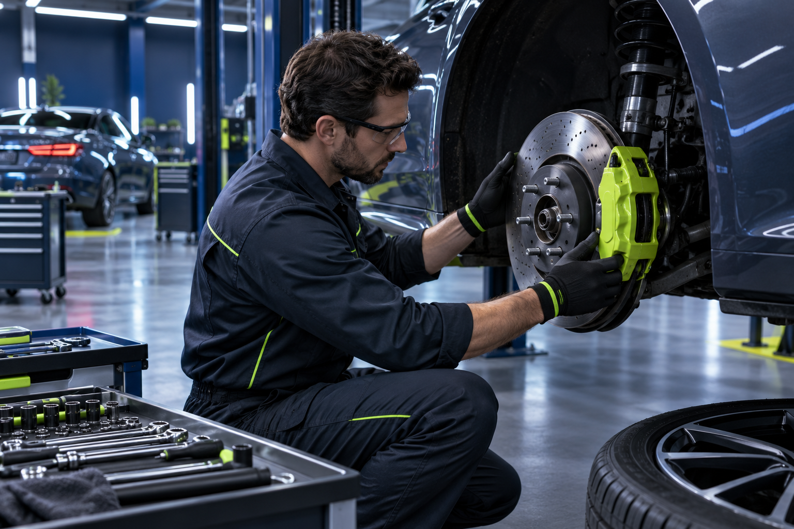
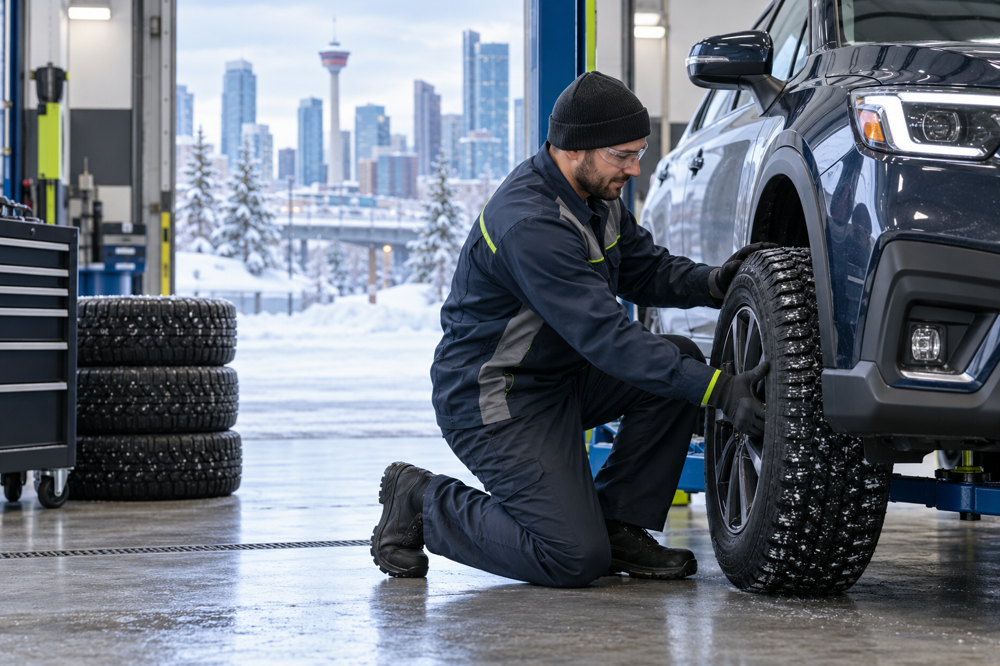

Explain the concernTell us what you hear, feel or see.
STRAIGHT ANSWERS. SKILLED REPAIRS.
Know what
your car needs.
Friendly, practical auto care in Calgary NE—from diagnostics and maintenance to repairs, tires and body work.
Get a clear diagnosisUnderstand the recommended work.
Approve the repairMove forward with confidence.
START WITH THE SYMPTOM
What is your
car telling you?
Select the closest concern. We’ll help you prepare the right information before you call or request an appointment.
CHECK / 01
A light came on
Note which dashboard symbol is showing, when it appeared and whether the vehicle feels different. Avoid guessing—diagnostic testing can help identify the cause.
Request diagnostic service →COMPLETE VEHICLE CARE
Service that keeps
you moving.
Diagnostics & repair
Practical troubleshooting and mechanical repair for everyday vehicle concerns.
Brakes & suspension
Inspection and repair for braking, steering, handling and ride concerns.
Maintenance
Routine care designed to support reliability and help prevent larger problems.
Tires & seasonal care
Tire service and Calgary-ready seasonal preparation for safer driving.
Body & cosmetic repair
Ask the team about available body repair and appearance services.
Not sure what you need?
Call (403) 800-1407 →
DETAILS MATTER
Repair decisions
made clearer.
Customers consistently mention honest advice, fair charges, fast diagnostics and friendly explanations. That is the kind of service relationship every driver deserves.
“Courteous and friendly staff explained what was needed.”— Public Google review
CALGARY-OWNED AUTO CARE
Independent by
design.
Universal Auto Services Ltd has served Calgary drivers since 2016. As an independent shop, the focus is personal: listen carefully, explain the work and help customers make informed decisions about their vehicles.
2016Incorporated*4.2★Public rating*47Public reviews*

BOOK YOUR VEHICLE IN
Let’s get you
back on the road.
Complete the form and we’ll prepare a text message you can review and send directly to Universal Auto Services.
VISIT THE SHOP
Universal Auto Services Ltd.
ADDRESSBay 130, 10990 42 Street NE
Calgary, AB T3N 1Y9
HOURS*Mon–Fri: 9 AM–5 PM
Saturday: 9 AM–3 PM
Sunday: Closed
PHONE(403) 800-1407